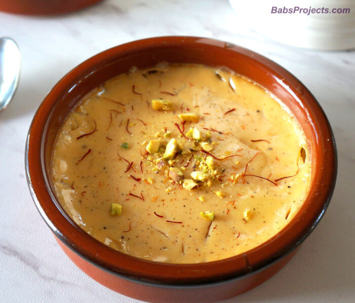

Mishti Doi
Home

Description
A traditional Bengali dessert made by caramelizing sugar and blending it with thickened milk and yogurt.
Ingredients
- Full cream milk
- Sugar
- Yogurt
Steps
- Boil milk until reduced to half.
- Caramelize sugar and mix into the milk.
- Cool slightly, then add yogurt and whisk.
- Pour into earthen pots.
- Set overnight until firm and chilled.